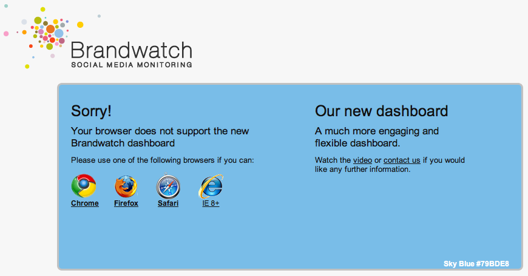

Users have been informed of these changes
We let them know that they need to upgrade to use the app
We've seen a gradual decrease in users over the last year
| Date | Visits |
|---|---|
| July 2011 | 664 |
| June 2012 | 382 |
| July 2012 | 188 (estimated) |
For comparison, the main app has had 13239 unique visits this month.
This month we've had 26 unique visits to 3.9 using IE7, and 2 using IE6
/
#